Eco-Responders: After the Fire
You are part of the Eco-Responders team, called to Forest Glen after a wildfire. Your mission is to investigate what changed, study the evidence, and figure out how one wildfire could affect an entire ecosystem.
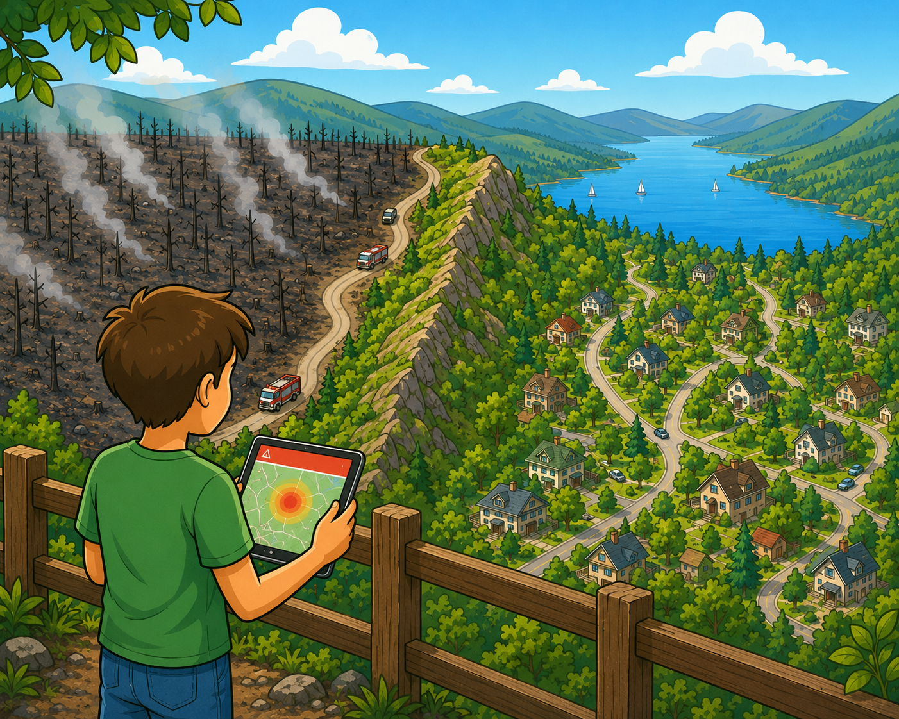
After the Fire
The air smells faintly of pine and smoke, reminders that nature is constantly changing.
As an Eco-Responder, you've learned that every fire tells two stories: one of loss and one of renewal.

This week, your team is on alert. Just over the ridge, a town called Forest Glen was hit by a wildfire two weeks ago.
Your town, Maple Valley, sits just downwind. Your Eco-Responder team must figure out what changed after the fire in Forest Glen and what should happen next to prepare Maple Valley.
As you explore, pay attention to what changed in the land, plants, animals, and people; you'll use this evidence to make decisions later. At the end of this mission, you'll use your evidence to recommend how Maple Valley should prepare for future fires.
What do you think changed the most after the fire, and why?
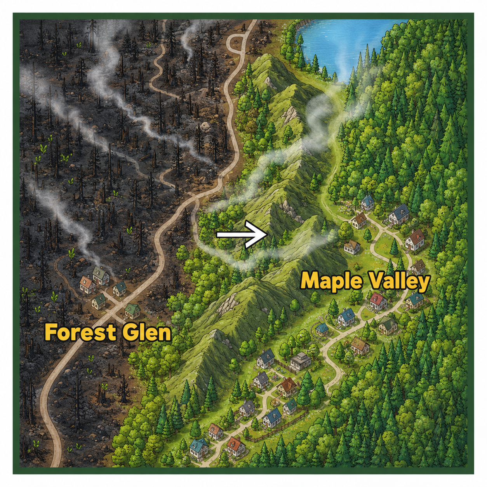
As you study the map, your tablet vibrates.
Ping! Ping! Ping!
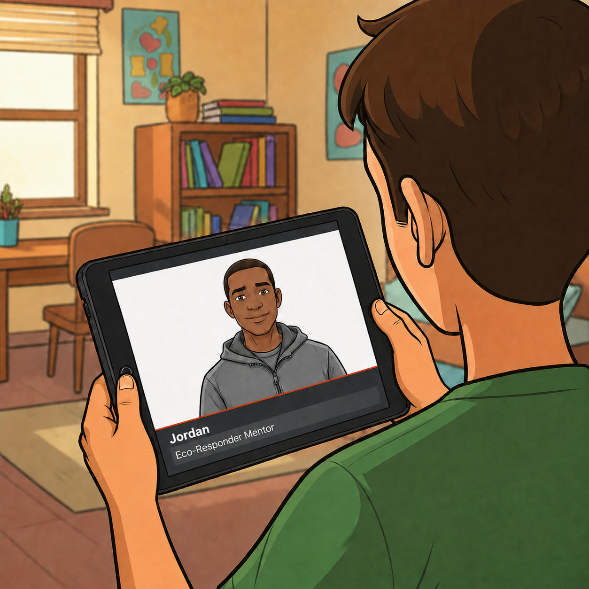
Your tablet vibrates in your hands. Then, your Eco-Responder tablet flashes red.
Jordan, your Eco-Responder mentor, appears on the screen.
"Forest Glen's fire is finally contained," he says, "but NOAA just issued a Red Flag Warning for Maple Valley, and we need to make sure Maple Valley is ready."
Relative humidity is 14%, winds steady at 25 mph, strong enough to push embers a mile.
"We need evidence from Forest Glen before the next spark, and don't forget to bring your field journal," says Jordan.
Your team needs evidence to understand what happened after the fire. Where will you begin your investigation?
Both approaches can help your team understand what happened, but they may reveal different clues.
Climate Data Investigation
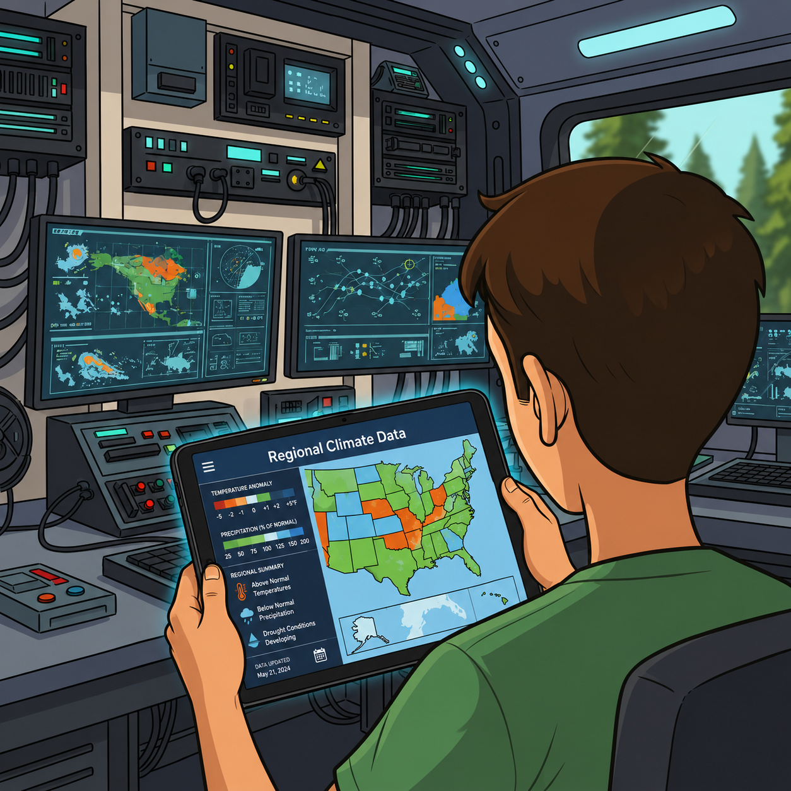
You arrive at the mobile lab, and Jordan pulls up the latest weather and fire-condition data on your tablet.
"We don't have time to check everything first," he says. "Choose the clue you think will help you understand what was happening before the fire in Forest Glen."
He pauses, then adds:
“Maple Valley hasn’t burned… but it could. See how the conditions compare.”
Look for patterns in the data to understand what was happening before the fire. Then use that evidence to decide if similar conditions might exist in Maple Valley.
Regional Climate Data Simulator
Determine which data from Forest Glen you want to study further as you will be reponsible for sharing with your Eco-Responder team .
Satellite Images

Jordan closes the climate data and zooms in on a satellite image of Forest Glen.
"If conditions looked like this, what do you think the team in Forest Glen might be seeing on the ground?"
You pull up the satellite overlay. The hills appear dry and tan instead of green.
The humidity sensor shows very low moisture in the air.
"Use the data and satellite image together to figure out what the environment was really like," Jordan says.
"What might these conditions mean for soil, plants, or wildlife in this area?"
He pauses, then adds, "If conditions like this showed up in Maple Valley, what do you think could happen there?"
Your observations help build the picture. Now it's time to use that evidence to decide what matters most.
What do the data and satellite image show about conditions in Forest Glen before the fire? What is one piece of evidence that supports your thinking? Based on this, could Maple Valley be at risk for a similar fire? Explain why or why not.
Field Observations

You ride beside Ranger Marisol into Forest Glen.
The air smells like ash and rain. Your tablet displays photos she’s collected from different parts of the area.
“Take a close look,” she says. “Every detail tells part of the story of what happened here.”
She glances at the screen, then adds:
“What you find here can also help us understand what might happen somewhere else… like Maple Valley.”
Look carefully for clues. Use what you observe to figure out what changed, what caused it, and whether similar risks could exist in Maple Valley.
🗺️ Explore Forest Glen
Click a glowing button on the map to explore one area. Choose carefully as your team will compare findings later.

🌲 Forest Region

🌱 New Plants
NoticeYou see small green plants growing. There are no big plants yet.
ThinkWhy might small plants grow back before big trees, and what might be missing??
🌰 Pine Cones
NoticeSome pine cones are open with seeds nearby.
ThinkWhat might have caused these cones to open?
🟤 Soil
NoticeThe ground looks loose and covered in ash.
ThinkWhat might happen if it rains here?
What did you notice in this area, and what does it tell you about how the fire affected this environment? Based on your observations, do you think a similar impact could happen in Maple Valley? Explain your thinking using evidence from what you saw.
🏢 Downtown District

🏚️ Burned Building
NoticeParts of the building are gone, but some parts are still standing.
ThinkWhat is different about the parts that burned and the parts that did not?
🔩 Heat Damage
NoticeSome metal looks bent or warped.
ThinkWhat might this tell you about how hot the fire was in some places?
💨 Ash + Smoke Residue
NoticeThe ground and buildings are covered in ash.
ThinkHow could this still affect people or the environment?
What did you notice in this area, and what does it tell you about how the fire affected this environment? Based on your observations, do you think a similar impact could happen in Maple Valley? Explain your thinking using evidence from what you saw.
🏠 Residential Area

🧱 Chimney
NoticeThe stone chimney is still standing.
ThinkWhy do you think this part didn't burn?
🏠 House Outline
NoticeYou can see the shape of the house in the ash.
ThinkWhat does this tell you about how the fire burned the house?
📦 Belongings
NoticeSome objects are burned and some are not.
ThinkWhat patterns do you notice about what burned and what didn’t?
What did you notice in this area? What changed because of the fire? Use at least one piece of evidence from what you observed to explain why you think that change happened.
Field Observations

"We still don’t have the climate data," Marisol says.
"But you’ve seen the ground. What do these clues make you wonder about the conditions before the fire?"
You notice brittle leaves that crumble in your hand.
The streambed nearby is cracked.
"Use your field clues," she says. "What might the conditions have been like before the fire?"
"And if you saw clues like this somewhere else… what might that tell you?"
Your observations help complete the picture. Now it’s time to use that evidence to decide what matters most.
As you examine the field clues, think about what changed, what may have caused those changes, and what those conditions could mean for places like Maple Valley.
What do your field clues suggest about the conditions before the fire in Forest Glen? Use at least two pieces of evidence from what you observed. Based on these conditions, do you think a similar fire could happen in Maple Valley? Explain your reasoning.
Team Regroup
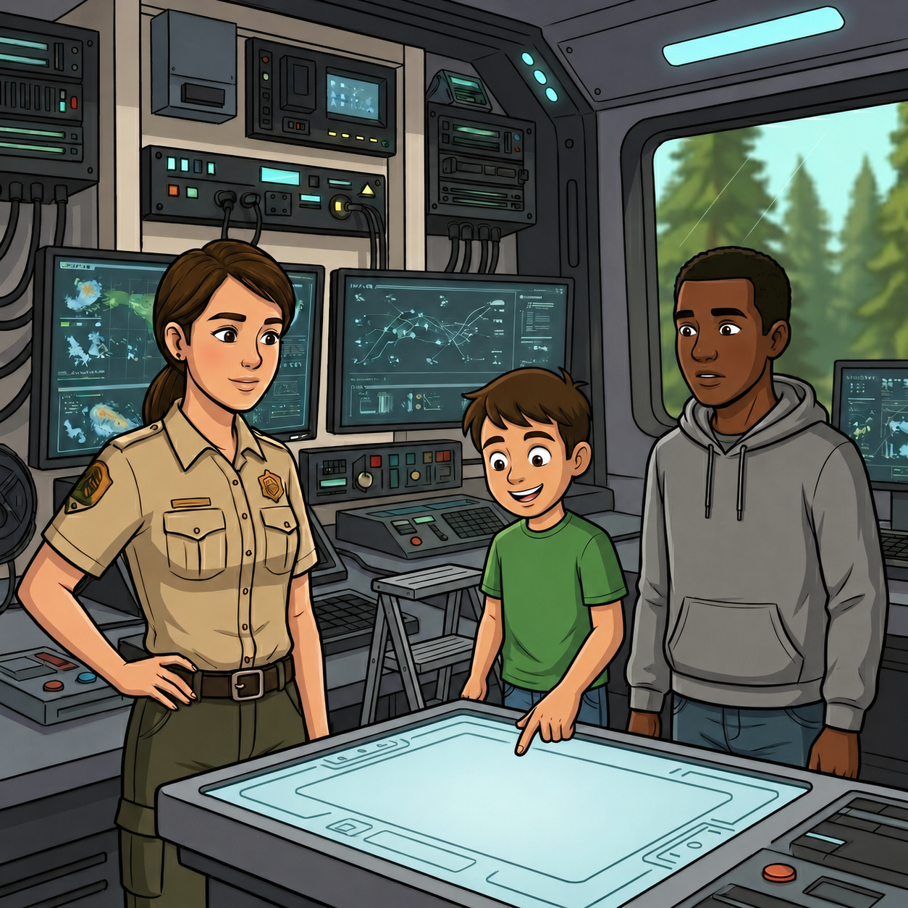
You regroup with Jordan and Ranger Marisol and share the data your team collected from Forest Glen.
They review your notes carefully.
"This is exactly what we needed," Marisol says. "Good work."
"Head home, get some rest, and be ready to return tomorrow."
The next day, you meet back at the command center.
Your tablet lights up with new reports.
"We combined your field data with regional weather and emergency reports overnight," Jordan says.
"These reports pull everything together so we can understand what really happened, and what might happen next."
He taps the screen. "You’ve gathered strong evidence from Forest Glen. Now you need to decide what it all means."
"Which report will help you explain what happened, and what might happen next?"
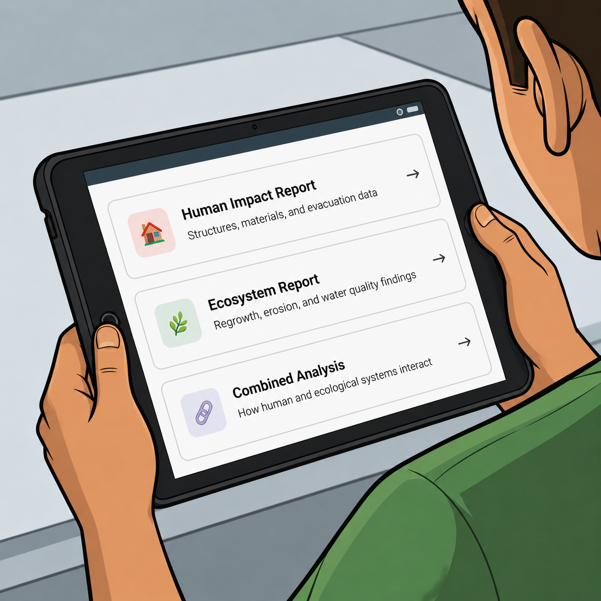
Choose Your Investigation Report
Three field reports have come in from the burn zone in Forest Glen.
Each looks at the fire in a different way. Choose the report that you think will best help you explain what happened,and what could happen next.
Human Impacts Report

You open the Human Impact Report from Forest Glen.
Each section shows a different human factor that may have changed what happened during the fire.
As you examine the report, look for patterns. Which human choices seemed to reduce risk or help people recover?
Human Impact Report
Evidence collected from residential burn zones — tap each item to examine.
Homes with cleared space around them were more likely to survive than those without it.
"The 30-foot zone is the single biggest predictor of structure survival." — Wildfire safety analyst
Homes with metal roofs survived more often than those with wood shingles. Embers landing on wood ignited within minutes.
Ember transport can carry fire over a mile ahead of the flame front.
Communities with practiced evacuation plans cleared out faster than those without them.
Preparation time is recovery time — the faster the exit, the faster the return.
What human choices seemed to help homes survive the fire in Forest Glen? Use evidence from the report to support your answer. Based on this, what is one action people in Maple Valley could take to reduce fire risk? Explain your reasoning.
Ecosystem Recovery Report

You and Marisol review what you observed in the nearby canyon slopes.
"The manzanita may come back quickly," Marisol says. "Roots that stay alive underground can start growing again."
You notice bare slopes nearby turning to mud after rain.
"Without roots, the soil may not stay in place," she explains. "That runoff can carry nutrients away."
You start thinking about what might happen next as these changes continue over time.
You begin to wonder how these changes might affect the creek and the living things that depend on it.
Back at the mobile lab, Jordan uploads your observations into the shared investigation portal.
How might these changes affect plants and animals over time in this ecosystem?
Ecosystem Recovery Report
Model of how the ecosystem may change over the first 12 months — tap each item to explore.
Manzanita resprouted from root crowns within 8 weeks. Lupine seeds, dormant for decades, germinated in the ash-enriched soil.
Some fire-adapted species may respond to wildfire as a reset, allowing new growth to begin.
Bare slopes lost up to 12 tons of soil per acre after the first major rainfall. Slopes with surviving root systems lost far less.
Without ground cover, rain can carry soil away more easily.
Nitrate runoff in streams spiked 4× above baseline in the first month, then gradually declined as vegetation returned.
Changes upstream may affect water quality downstream.
What is one sign the ecosystem in Forest Glen is recovering, and one sign it is still struggling? Use evidence from the report. Based on these patterns, what might happen over time if similar conditions existed in Maple Valley? Explain your thinking.
Both Perspectives

You split your tablet screen. One side shows how the fire affected homes. The other shows how the land responded.
As you compare both views, you begin to notice patterns between what people did and how the land responded.
- Some areas with more homes still standing also showed less soil movement.
- In some places where debris was cleared quickly, more runoff appeared after rain.
"We’re starting to see how these pieces might be related," Jordan says.
How might a human action connect to changes in plants or animals, and how could those changes affect people?
Combined Perspective
Where human and ecological recovery intersect — tap each item to examine.
Neighborhoods that combined defensible space with native landscaping showed signs of both structural and ecological recovery.
In some cases, working with natural systems may support both homes and habitat.
Areas cleared beyond 100 ft showed more erosion and slope instability in some areas, damaging the very structures they meant to protect.
In some situations, clearing too much may create new risks.
Communities that included ecologists in their rebuilding plans often restored services and stability sooner than those that didn’t
Recovery may involve both human and ecological decisions.
How does one human action connect to changes in the ecosystem in Forest Glen? Use evidence from the report. Based on this connection, how could similar actions impact both the environment and people in Maple Valley? Explain your reasoning.
Team Briefing
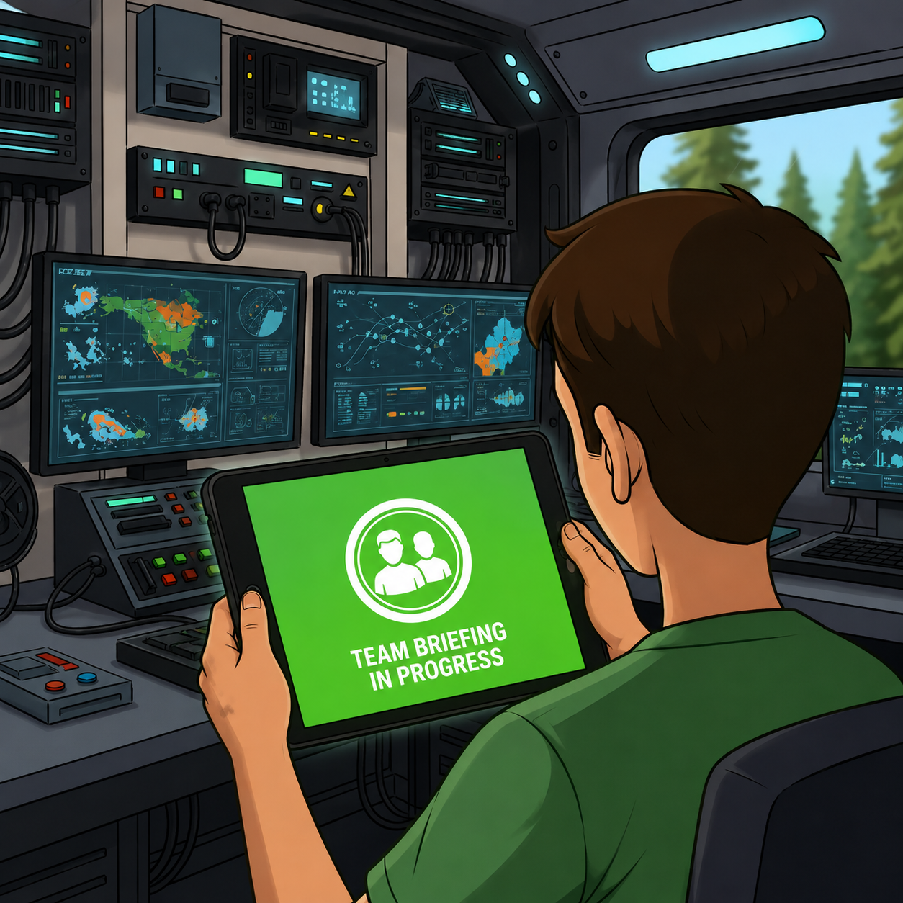
A green icon flashes on your tablet: "TEAM BRIEFING IN PROGRESS."
Based on what your team uncovered, it’s time to compare findings with other investigation teams.
Jordan’s voice comes through the speaker.
"Eco-Responders, it’s time to share what each investigation team discovered."
Screens blink on one by one as you review findings from the Human Impact, Ecosystem, and Combined Analysis reports.
"Each team looked at the fire in a different way," Jordan says. "Now, put the pieces together."
"What do these reports reveal when you look at them as one system?"
As you read the reports, look for connections between what people did, how the land changed, and what might happen next.
What is one cause-and-effect connection you noticed between a human action and changes in plants or animals? Based on this connection, what might happen if similar actions occurred in Maple Valley? Explain your reasoning.
Seeing the System
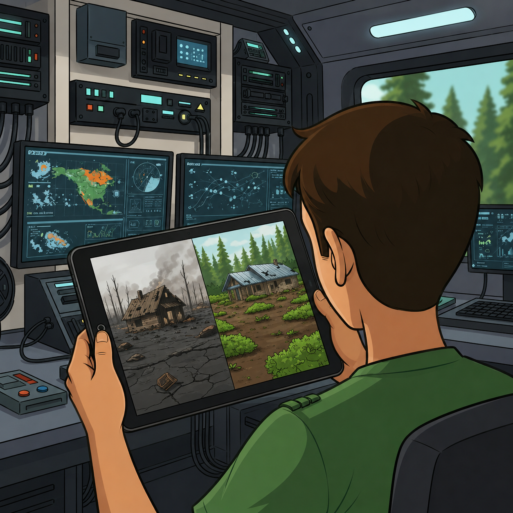
After the briefing, two images appear on your tablet: one neighborhood destroyed, another still standing.
"Same fire, same wind," Marisol says. "Different results."
Some areas that cleared brush but kept native shrubs showed faster recovery. Over-cleared zones showed more signs of soil washing away after rain.
"Vegetation protects the soil," she reminds you. "Too little cover, and erosion takes over."
Forest Glen cannot be undone. But Maple Valley can still learn from what happened here.
"Before we tell Maple Valley anything," Jordan says, "we need to understand how these changes are connected."
"If one part of the system changes, what happens next?"
Your team has the evidence. Now it’s time to trace how these changes connect, and what they could mean for Maple Valley moving forward.
Choose one change in Forest Glen. What other changes could it cause in the system? Explain how one change leads to another.
Feedback Loops
Your team gathers back at the command van.
Jordan leans over your tablet, loading the next model.
"Before we give Maple Valley any advice," Jordan says, "there's something I need you to understand."
This model shows how one change can lead to another, and how those changes can keep repeating," Jordan says.

He taps the screen, and a new loop appears.
"Watch what happens when the cycle keeps going," he says.
He looks back at you.
"If we can figure out what keeps the cycle going, we can figure out how to change it"
Build your loop first. Then watch what happens as the cycle repeats.
Feedback Loop Model
Back in the command van, you open the modeling app.
Arrows show how one change can lead to another.
"To make the best recommendation, your team needs to see how everything connects. Build the feedback loop," Jordan points out.
Each loop shows how changes can keep affecting one another.
When your model is ready, your team will bring it to Maple Valley's planners, so they can see the system before they make a decision.
Start with one change you noticed earlier. What happens next? Then what happens after that? Follow the chain all the way around, what happens when the cycle repeats?
Feedback Loop Model: How One Change Leads to Another
Build Your Eco-Responder Feedback Model: Use the word bank to fill in the feedback loop and show how one environmental change leads to another. You only need to use 4 boxes to complete your loop.
Try to connect both human actions and environmental changes in your loop.
Word Bank
Tip: Drag chips into the boxes. Click × to remove a placed chip.
Step 1 → Step 2 → Step 3 → Step 4 → Step 1 (repeats)
The Pattern Doesn't Stop
You step back from your model.
The arrows don't stop.
Even after the fire is gone… the effects continue. One change leads to another. And then another.
You trace the cycle again.
If nothing interrupts it, the system keeps going, and the effects can build over time. This wasn't just a one-time event. It's a pattern.
So now, you're not just asking what happened. You're asking: What could change it?

What is one action that could interrupt or improve your feedback loop? How would that change what happens next in the system??
Planning Forward for Maple Valley
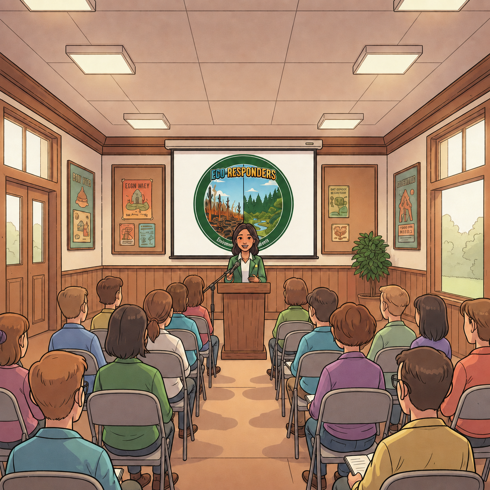
Days later, your feedback loop model reaches Maple Valley's town hall.
The room hums with voices. Families, planners, and neighbors are here because of what happened in Forest Glen.
Mayor Elena steps to the podium.
"Forest Glen's fire changed more than trees," she begins. "It changed how we think about safety, building, and the land itself."
"Maple Valley wasn't burned, but we were close. Forest Glen's loss is a warning to us."
"Forest Glen shows us what can happen. Maple Valley is where we decide what happens next."
"If we prepare wisely now, we can protect both our homes and our habitats before the next fire season."
She points to your feedback loop on the big screen.
“Our Eco-Responders have shown us how one choice can lead to another. Now we have to decide where in the system to act. Not all actions will change the pattern in the same way.”
Mayor Elena shares three forward-thinking plans for Maple Valley.
Each plan targets a different intervention point in the cycle.
Think back to your feedback loop. Which plan may change the cycle the most? Which plan could break harmful cycles or create a healthier system over time?
Where in the system should Maple Valley act? Use the evidence from Forest Glen and your feedback loop to decide which plan best changes the pattern you identified.
Plan A: Build Fast
Expand Maple Valley quickly with few new fire-safety rules.
Plan B: Build Smarter
Use fire-resistant materials and plant native vegetation.
Plan C: Balanced Plan
Prepare in stages, with defensible space and habitat protection.
Which plan do you recommend for Maple Valley? Use evidence from Forest Glen and your feedback loop to explain how your plan interrupts harmful cycles or creates a healthier system over time.
A Message for Maple Valley
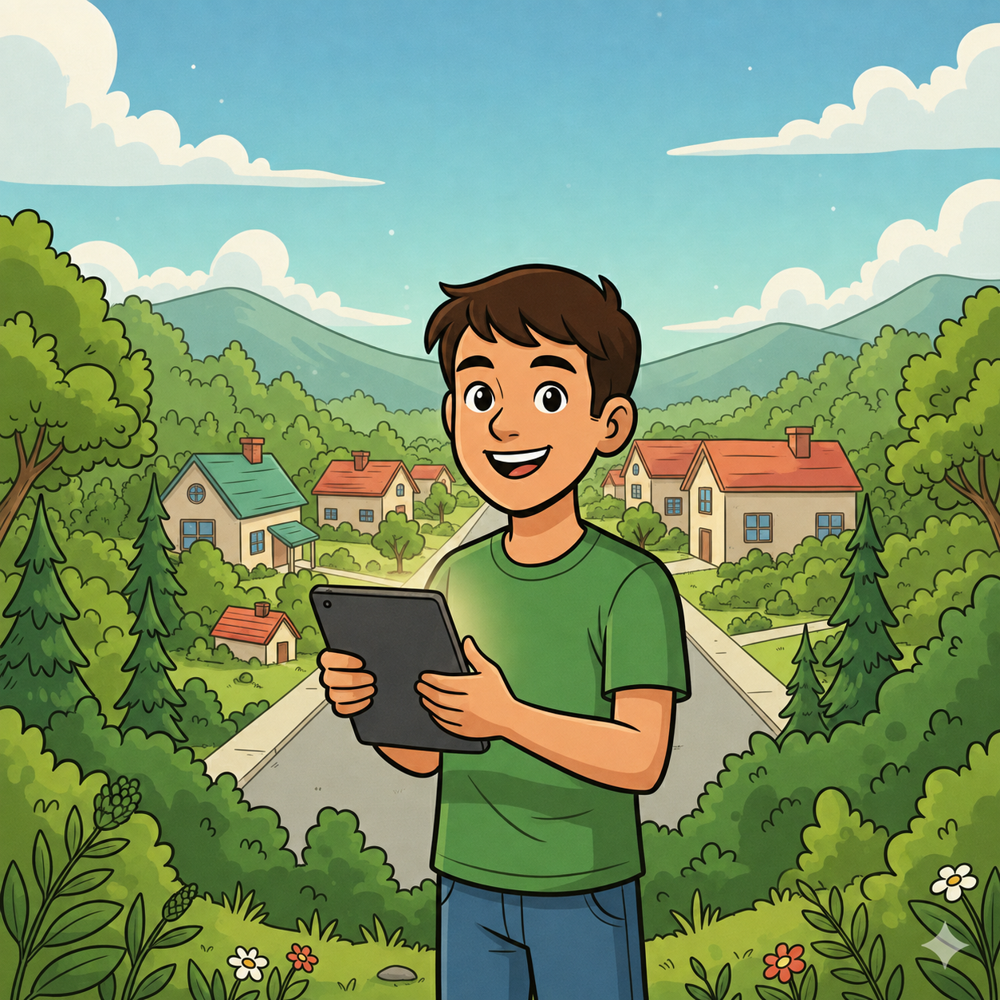
Word spreads fast. Maple Valley neighbors are asking questions, they heard about Forest Glen, and they want to know what they can do.
"You’ve studied the evidence," Jordan says. "Now it’s your turn to help your neighbors get fire-smart before the next fire season."
Your Eco-Responder team has been asked to create a message for Maple Valley residents.
This isn’t just about what happened. It’s about helping a community decide what to do next.
Create a fire-smart message for Maple Valley residents.
Choose the format that will best help your community prepare before the next fire season.
Your message should:
- Use evidence from Forest Glen
- Show how one action changes the pattern you identified in your feedback loop
- Explain how that action can reduce risk over time
- Explain how that action could affect at least one plant or animal population over time
Write a short PSA for Maple Valley residents. Use evidence from Forest Glen to explain what people should do, and how those actions could change the system over time..
Write a short public safety script for Maple Valley residents.
Plan an infographic that teaches Maple Valley residents how to stay fire-smart before the next fire season.
Mission Debrief
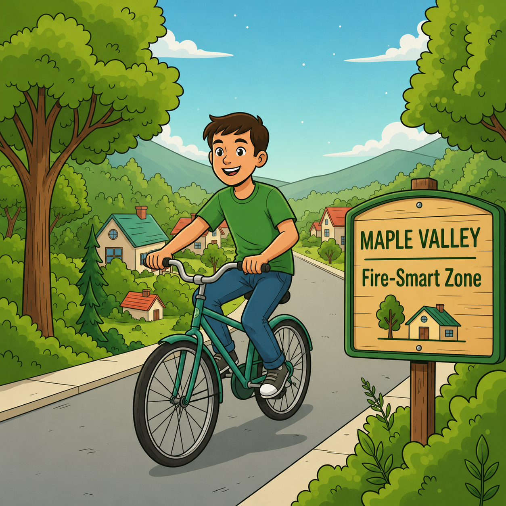
A week later, you bike past a brand new sign:
"Maple Valley — Fire-Smart Zone."
Forest Glen can’t be changed now. But Maple Valley still has choices to make.
Jordan sends one last message:
“Science helped you understand what happened,” Jordan says. “What you do with that understanding, that’s what shapes what happens next.”
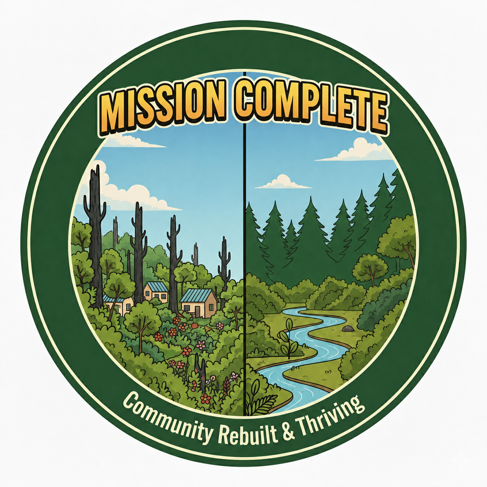
Think about how your thinking changed during the mission, and how your choices shaped what you understood about the system.
What changed your thinking the most during this investigation, and why?
What did you think at the beginning?
What evidence or idea impacted you?
How is your thinking different now?
How does this change how you think about human impact on the environment?
Mission Complete
Your Field Journal is saved on this device. You can review or export it now, and the standards quiz remains optional.
Optional Standards Quiz
Would you like to take a six-question quiz about how natural and human-caused changes to habitats or climate can impact populations?
The quiz is optional. If you take it, your questions, responses, feedback, and score will be added to your Field Journal.